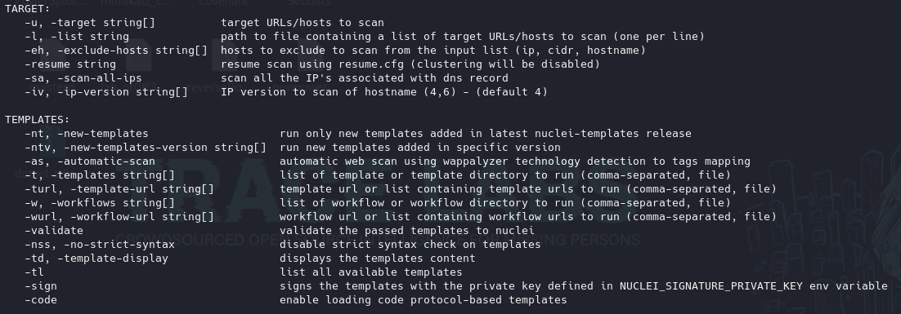
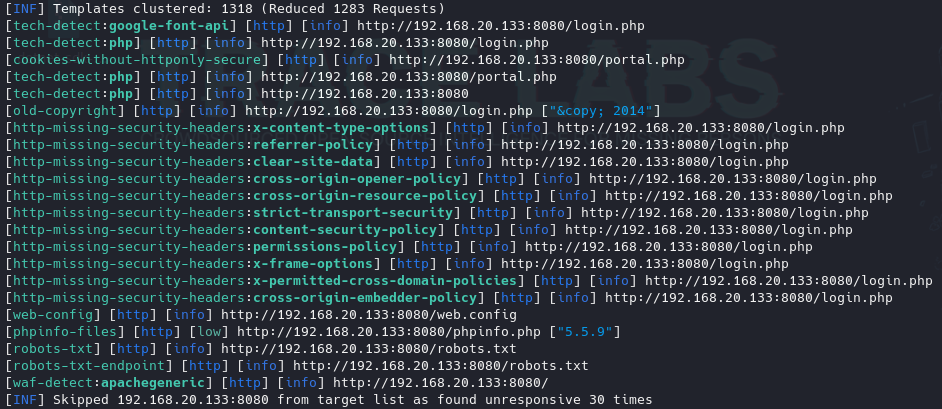

https://github.com/projectdiscovery/nuclei
Es un escaner de vulnerabilidades para varias cosas no solo aplicaciones web y tiene una cosa interesante y es que se basa en el concepto de plantillas.
Tiene un repositorio de plantillas que contienen una descripción mediante un lenguaje denominad “JamL” donde se indican una serie de parámetros que la herramienta va a testear contra un objetivo que le indiquemos.
Todo esto permite que la gente implemente de forma continua muchas plantillas que analicen vulnerabilidades mas o menos recientes.
Además de ser interesante por esto mismo, el uso de plantillas específicas creadas por la comunidad es útil por poder crear facilmente nuestras propias plantillas.
https://docs.projectdiscovery.io/templates/introduction
Todo esto tiene cierto impacto en el ciclo de desarrollo seguro y bugbounty.
No viene por defecto.
go install -v github.com/projectdiscovery/nuclei/v3/cmd/nuclei@latest
nuclei --update-templates

nuclei -u http://192.168.20.133:8080 -ni
-ni → para evitar que haga request a paginas online
Se puede lanzar también contra la máquina y no específicamente contra una aplicación web.

Para especificar un conjunto de plantillas específico:
nuclei -u http://192.168.20.133:8080 -ni -t vulnerabilites/other